Nyzo version 559 (commit on GitHub) adds NTTP sender data generation to the client. It also introduces the normalized sender-data string.
This version affects primarily the client.
In Client, a different overload of ConsoleUtil.printTable() is now used to eliminate the need to wrap the String value in two layers of lists in this method.
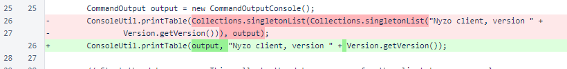In ClientTransactionUtil.sendCycleTransaction(), PendingMessage objects and the ScriptUtil.sendMessages() method are now used. This reduces the time required to send the transaction to the entire cycle.
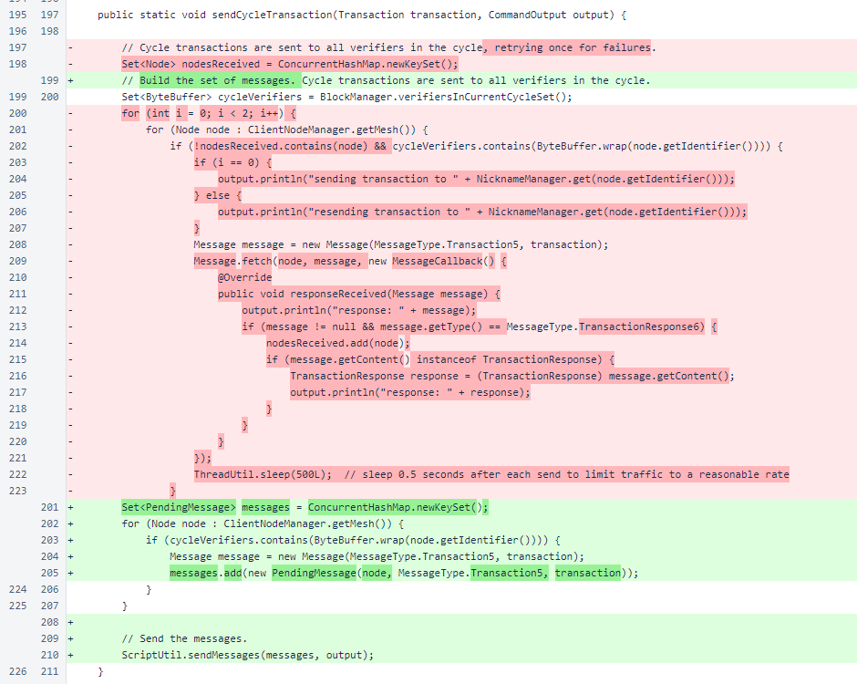The ClientTransactionUtil.senderDataString() method has been renamed to senderDataForDisplay(). This method was renamed to avoid confusion with the new normalized sender-data string format.
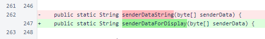ClientTransactionUtil.isNormalizedSenderDataString() tells whether an input string matches the format specified for normalized sender-data strings. This format is case-insensitive, but it is otherwise strict. The input string is decoded to a byte array and re-encoded to a normalized sender-data string. The input is then checked against the re-encoded version.
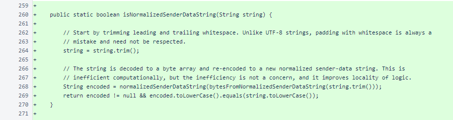ClientTransactionUtil.bytesFromNormalizedSenderDataString() decodes a normalized sender-data string to a byte array. A normalized sender-data string can represent any sender-data value from 0 to 32 bytes in length.
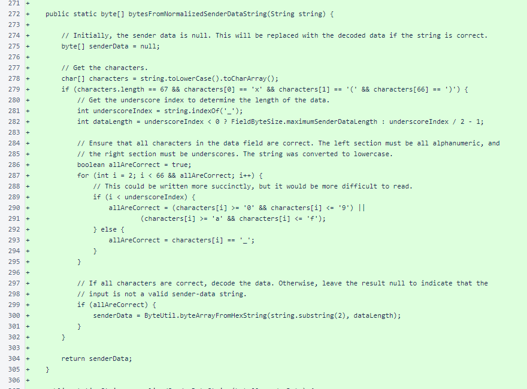The ClientTransactionUtil.normalizedSenderDataString() method produces a string representation of a sender data field. This field was designed to allow easy input of raw byte values in the sender-data field of various Nyzo tools and scripts without requiring an additional input to specify whether the sender-data input represented raw bytes or a text string.
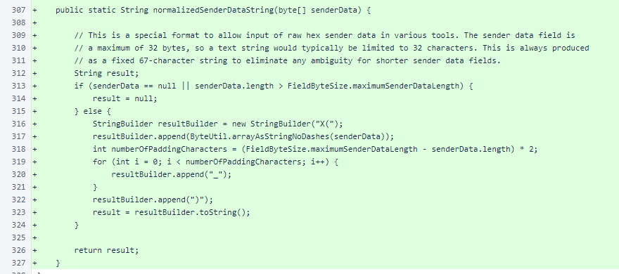In CommandEndpoint.getFormPage() and CommandEndpoint.formElement(), the argumentValues list was removed. Now, argument values are always passed in the validationResult. This simplifies the data structures in this class, simplifies the logic, and allows non-error messages to be attached to arguments whenever the form is displayed.
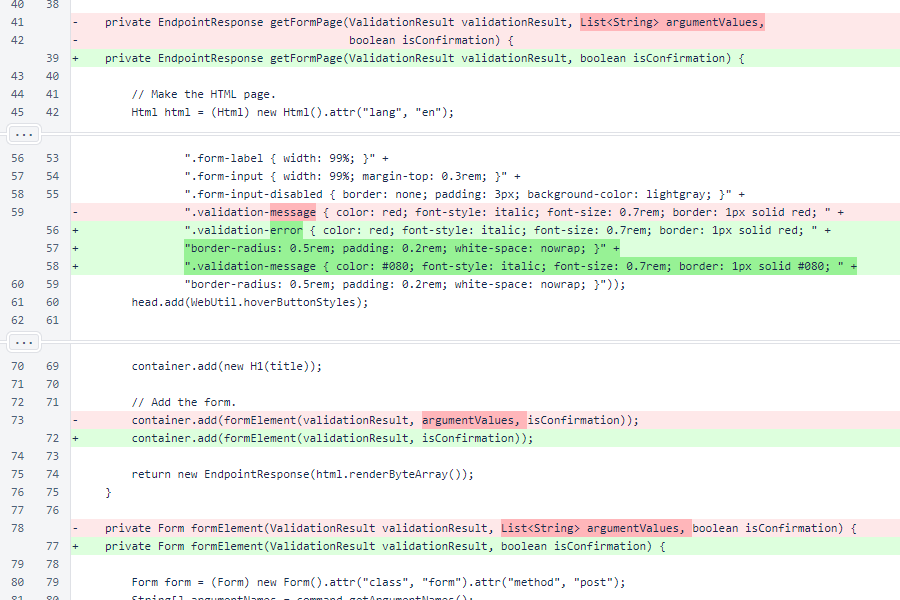The red validation-message CSS class is now called validation-error, and validation-message is now used for non-error messages, displaying a green label next to arguments.
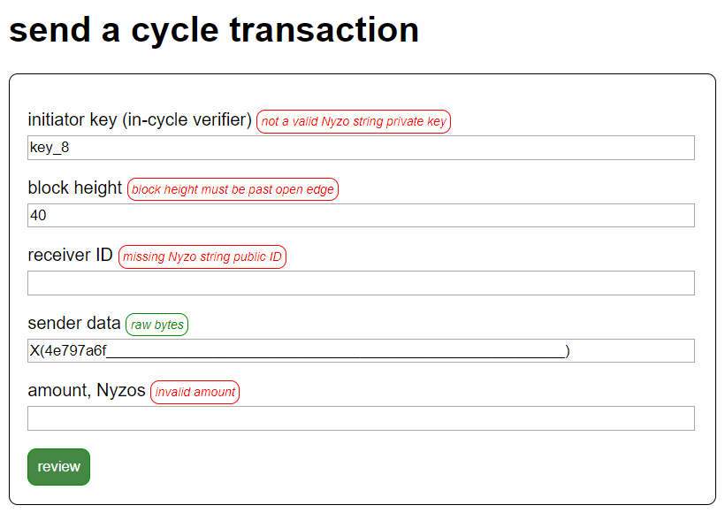In CommandEndpoint.formElement(), the argument value, if present, is always retrieved from the validationResult. The updated logic for the argumentSuffix handles the new green validation-message labels.
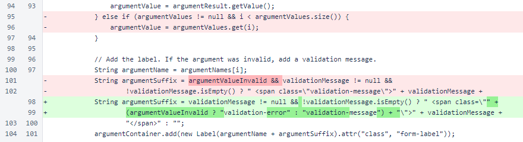Later in CommandEndpoint.formElement(), an automatically approved validationResult is now created if validation is not required. This ensures that a validationResult is always available when argument values are available.
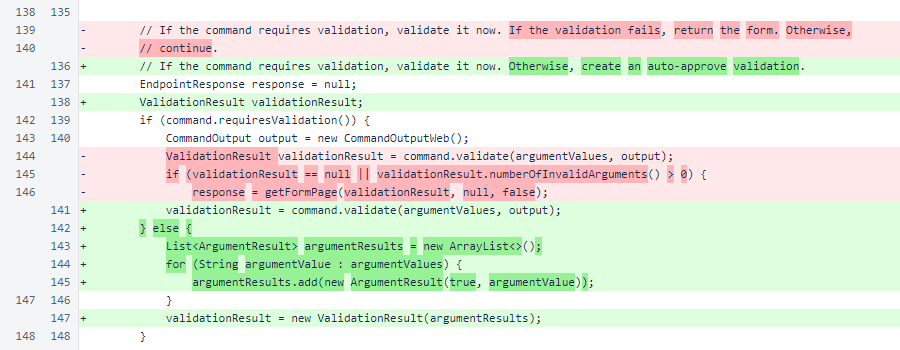At the end of CommandEndpoint.formElement(), the logic for generating the next page has been simplified. This simpler logic was enabled by the consistent presence of the validationResult.
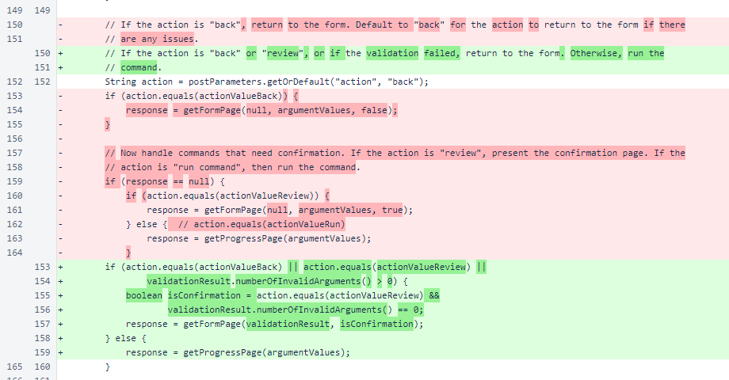NttpDataGenerateCommand was added to CommandManager.
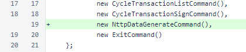In ConsoleUtil, the printTable() overload that printed a single cell was modified to accept a variable number of string arguments. This still allows a single cell to be printed, but it also allows multiple cells in a single row to be printed without cumbersome wrapping in the calling method.
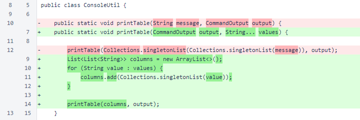In BalanceDisplayCommand, a getArgumentIdentifiers() method was added. This is a new method required by the Command interface. It is not yet used, but it will be utilized in the web client UI and in other upcoming client updates.
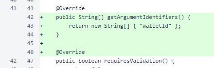Later in BalanceDisplayCommand, printing of a single-cell table was modified to match the new method signature.
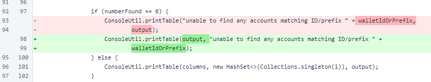The getArgumentIdentifiers() method was added to the Command interface.
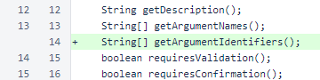In CycleTransactionListCommand, an implementation of getArgumentIdentifiers() was added, and a single-cell table print was modified.
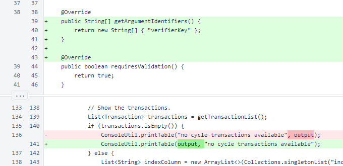In CycleTransactionSendCommand, an implementation of getArgumentIdentifiers() was added. Also, in the validate() method, validation of the sender-data argument now allows input of raw byte data using a normalized sender-data string.
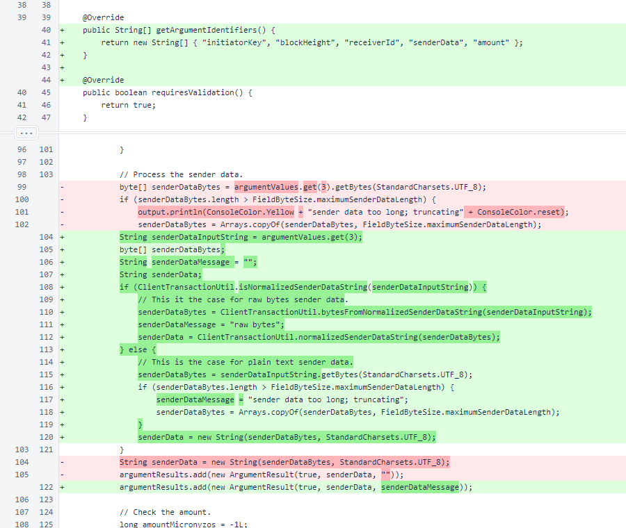In CycleTransactionSendCommand.run(), the case for a normalized sender-data string is now handled, also.
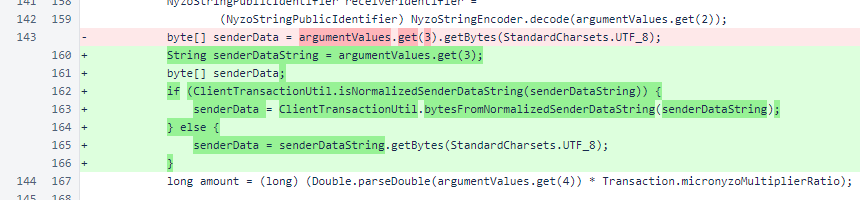CycleTransactionSignCommand.getArgumentIdentifiers() was implemented.
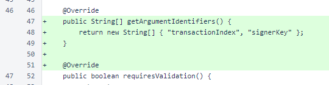In CycleTransactionSignCommand.validate(), the correct CommandOutput is now used.
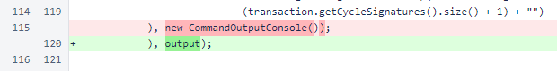In EmptyCommand, ExitCommand, and InvalidCommand, the getArgumentIdentifiers() method was implemented to return a 0-length array.
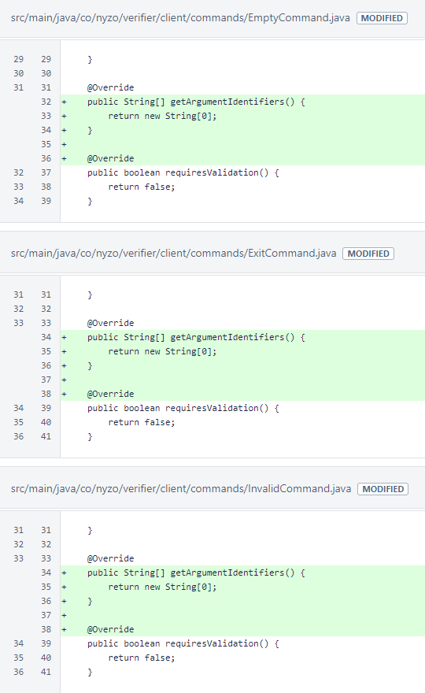The NttpDataGenerateCommand produces a normalized sender-data string to indicate support for a Nyzo team technology proposal. The arguments are the NTTP number and the Git hash of a commit that contains a version of the technology proposal that you want to support.
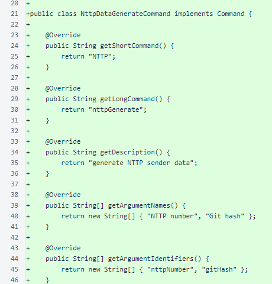The NttpDataGenerateCommand.validate() method ensures that the NTTP number is within a reasonable range and the Git hash is a 40-character (20-byte) hexadecimal string.
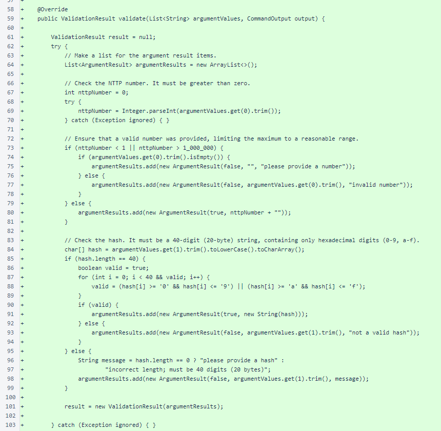The entire validation is wrapped in a try/catch block. If there is an unexpected exception during validation, an exception validation result is produced. This result marks every field as invalid with "validation exception" as the validation message.
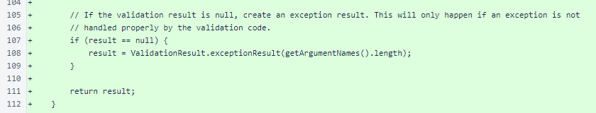NttpDataGenerateCommand.run() produces the normalized sender-data string necessary for indicating support for a Nyzo team technology proposal. This sender data format allows the cycle to indicate support for an NTTP at a specific Git commit. This allows proposals to be modified and updated, and there will be no question about which version the cycle supports.
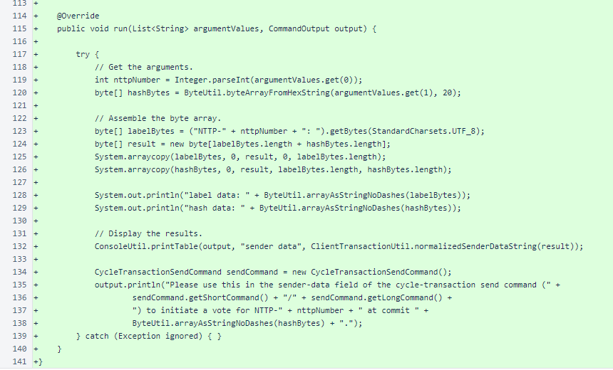PrefilledDataCreateCommand, PrefilledDataSendCommand, PrivateNyzoStringCommand, PublicNyzoStringCommand, and TransactionSendCommand have implementations of getArgumentIdentifiers().
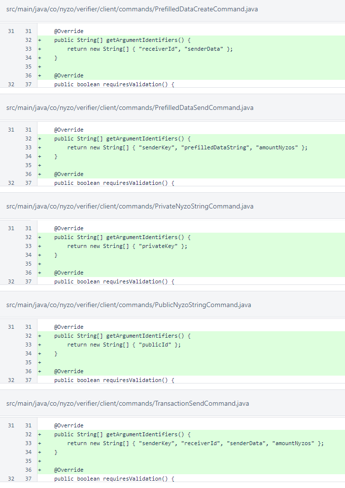In CycleTransactionSignScript.sendSignatures(), a CommandOutputConsole is now passed to ScriptUtil.sendMessages(). This argument is now required by that method to allow progress reporting.
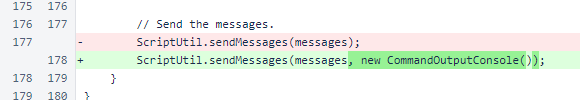A new PendingMessage constructor omits the signerSeed argument, setting signerSeed to null.
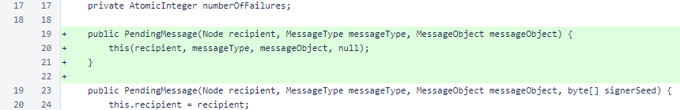ScriptUtil.sendMessages() now has a CommandOutput argument. This is used to provide feedback about the number of messages that will be sent and progress in sending those messages.
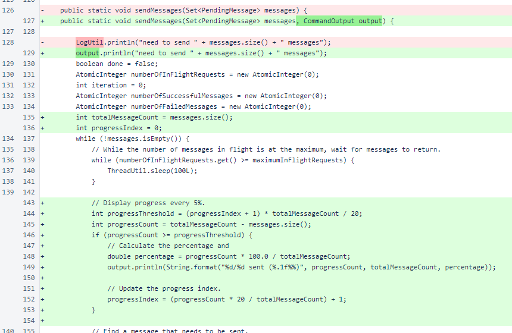When the messages are sent in ScriptUtil.sendMessages(), the Message contructor that does not accept a signer seed is used when the signer seed on the PendingMessage is null. This causes the message to be signed by the default verifier key.
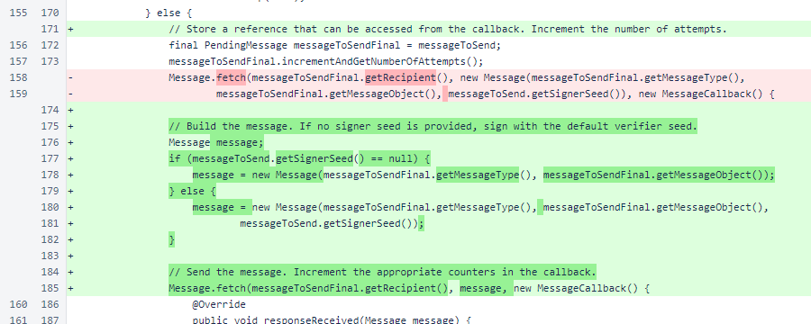In ConsensusTracker, the renamed ClientTransactionUtil.senderDataForDisplay() method is now referenced. As was noted above, this is a simple renaming to improve readability.
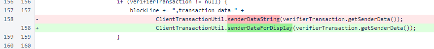In WebUtil, the convenience method that sanitizes sender data for web display was renamed for consistency with the renaming of the related ClientTransactionUtil method.
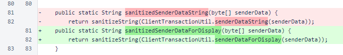